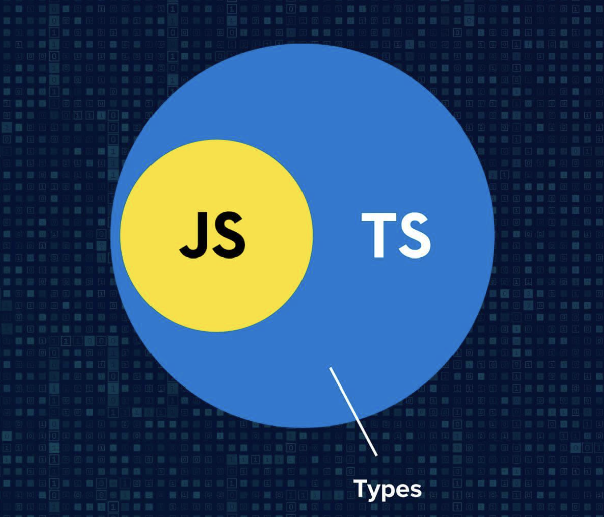
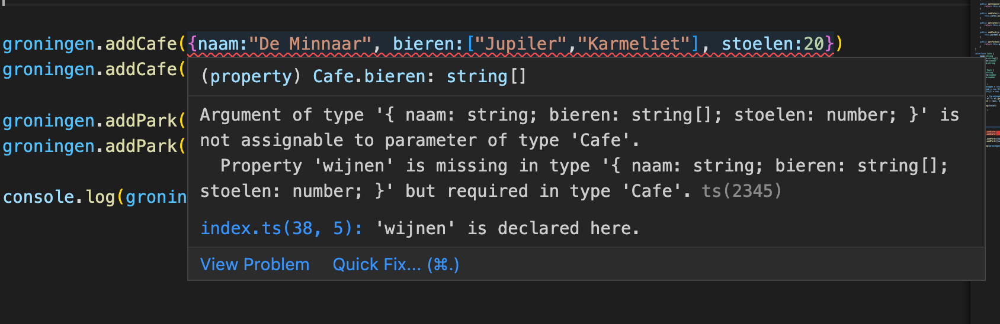
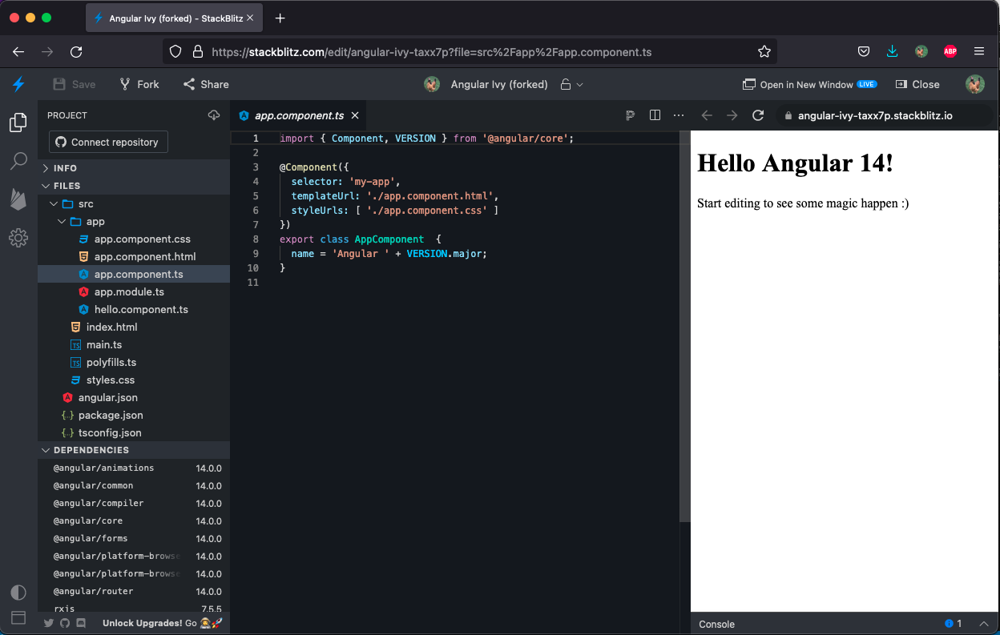

Practicum week 6¶
Deze week gaan we aan het werk met TypeScript en Angular. We beginnen met wat oefeningen op het gebied van TypeScript, zodat we dat later in kunnen zetten wanneer we een Angular-applicatie gaan opzetten.
TypeScript¶
Zoals gezegd is TypeScript een strikte superset van JavaScript. Dat houdt in dat alle valide JavaScript ook valide TypeScript is, maar niet andersom.

Van TS naar JS¶
Omdat browsers geen TypeScript aankunnen, moet je je TypeScript-bestanden eerst omzetten naar JavaScript – een techniek die bekend staat als transpileren. Er zijn verschillende manieren om dat te doen, maar in dit practicum maken we gebruik van tsc. Om dit aan de praat te krijgen moet je even wat infrastructuur opzetten:
# directory waar we gaan werken
mkdir typescript
cd typescript
# initialiseren van npm met alle default-waarden
npm init -y
# installatie van typescript
npm install typescript --save-dev
# instalaltie van tsc
npx tsc --init
Vervolgens kun je de opgaven maken in index.ts en transpileren met npx tsc. Dat genereert een bestand index.js wat je vervolgens kun runnen met node.
Niet altijd nodig
Als we later met Angular gaan werken, wordt dit allemaal automatisch voor je gedaan. Mocht je het voor nu te veel gedoe vinden, kun je ook gebruik maken van de online editor die Microsoft aanbiedt.
Opgave 1: de stad¶
We beginnen eenvoudig. Maak een klasse Stad die de onderstaande eigenschappen bevat. Zorg ervoor dat beide eigenschappen bij het aanmaken van een object van dit type moeten worden meegegeven. Maak getters voor beide eigenschappen.
| naam | type | omschrijving |
|---|---|---|
| naam | string | naam van de stad |
| inwoners | number | aantal inwoners |
Maak vervolgens de steden Groningen (250.000 inwoners), Winsum (7.500 inwoners) en Delfzijl (24.000 inwoners) aan. Maak gebruik van map en reduce om op basis van de getter van het inwoneraantal van alle drie de stenden het totaal aantal inwoners van deze drie steden uit te printen. Transpileer je code en bestudeer het gegenereerde JavaScript-bestand. Run tenslotte dit bestand. Als het goed is komt er 281.500 uit.
Opgave 2: interfaces¶
Eén van de ideeën achter TypeScript is dat deze taal types toevoegt aan JavaScript. In deze opgave gaan we de klasse Stad uitbreiden met twee zelfgemaakte typen: Park en Cafe. Elke goede stad heeft een aantal parken en een aantal café's. Een park heeft een naam, een grootte en een aantal banken dat je in het park kunt vinden. Een café heeft een naam, een aantal tafels en een lijst van bieren die je in dat café kunt bestellen.
Definieer de beide interfaces Park en Cafe, overeenkomstig de omschrijving die hierboven gegeven is. Voeg vervolgens een attribuut parken en cafés (eventueel zonder accent aigue) toe aan de klasse Stad: aangezien steden meerdere parken en kroegen kunnen hebben, moet dit natuurlijk een lijst zijn. Voorzie daarom deze klasse van een methode addCafe(c:Cafe) en van een methode addPark(p:Park). Maak ook getters voor beide attributen. Je kunt onderstaande code gebruiken om je uitwerking te testen.
groningen.addCafe({naam:"De Minnaar", bieren:["Jupiler","Karmeliet"], stoelen:20})
groningen.addCafe({naam:"De Bres", bieren:["Dommelsch","Heineken"],stoelen:13})
groningen.addPark({naam:"Noorderplantsoen", grootte:120, banken:20})
groningen.addPark({naam:"Stadspark", grootte:350, banken:10})
console.log(groningen.getCafes())
Creatio ex nihilo
Zoals vorige week uitgebreid is toegelicht, kent JavaScript (en dus bij extensie ook TypeScript) zogenaamde Creatio ex nihilo: je ziet dat we in de testcode hierboven geen klasse hebben die die interface implementeert, maar dat we eenvoudig objecten maken en die casten naar die interface. Dit kan natuurlijk misgaan wanneer we de interface aan zouden passen, maar het fijne van de type safety die TypeScript introduceert is dat onze IDE hierover zou vallen. Probeer het maar eens, door bijvoorbeeld wijnen toe te voegen aan de Cafe-interface...

Opgave 3: modules¶
Waarschijnlijk heb je tot nu toe alle bovenstaande uitwerkingen in één bestand (index.ts) staan. Eén van de problemen die JavaScript heeft (of had, eigenlijk) is dat het lastig is om code in verschillende bestanden met elkaar samen te laten werken. Je kunt natuurlijk in je html-bestand verschillende script-tags achter elkaar zetten (zoals je weet zijn die blocking), maar dat is niet echt praktisch. Om die reden heeft TypeScript het concept van modules toegevoegd.
Hernoem je bestand index.ts naar Stad.ts. Deze module moet zowel de klasse Stad exporteren als de bijhorende interfaces exporteren: voorzie ze daarvoor van het sleutelwoord export.
Maak vervolgens een nieuw bestand index.ts aan, waarin je de klasse Stad uit het bestand dat je zojuist hebt gemaakt importeert. Verplaats vervolgens de code die je in de vorige twee opgaven hebt gemaakt naar dit nieuwe index-bestand. Transpileer de boel en bestudeer het gegenereerde JavaScript-bestand. Als het goed is, kun je nu opnieuw de index.js runnen en krijg je hetzelfde resultaat.
> node index.js
[
{
naam: 'De Minnaar',
bieren: [ 'Jupiler', 'Karmeliet' ],
stoelen: 20
},
{
naam: 'De Bres',
bieren: [ 'Dommelsch', 'Heineken' ],
stoelen: 13
}
]
Maak nu een nieuwe module waarin je de klasse Provincie definieert. Een provincie heeft een lijst van steden, een hoofdstad en een positie in het land. Maak voor dat laatste attribuut gebruik van het onderstaande enum.
enum Positie {
Noord,
Zuid,
Oost,
West
}
Zorg ervoor dat je bij het aanmaken van een object van het type Provincie de naam en de positie mee moet gegven. Voorzie deze klasse verder van een methode getInwoners(), waarin je het totaal van de inwoners van alle steden retourneert, en van een methode addSteden, waaraan je een willekeurig aantal steden kunt meegeven die vervolgens aan de lijst van steden wordt toegevoegd.
!!! Warning: "Let op" Bij deze laatste opgave is het de bedoeling dat je gebruik maakt van de spread-operator
Je kunt de onderstaande code gebruiken om je uitwerking te testen, en ook om een beeld te krijgen van wat de bedoeling is.
const grunn:Provincie = new Provincie("Grunn", Positie.Noord);
grunn.addSteden(groningen, winsum, delfzijl)
console.log(`Onze provincie heeft ${grunn.getInwoners()} inwoners`)
Angular¶
Na deze relatief eenvoudige oefeningen gaan we verder met het werken met Angular. Hiervoor maken we gebruik van getting started with Angular. Je kunt Angular op je lokale machine installeren, maar je kunt voor dit practicum ook gebruik maken van StackBlitz. Hier kun je eenvoudig in je browser je Angular-projecten uitproberen. Je kunt hier inloggen met je Github-account.
